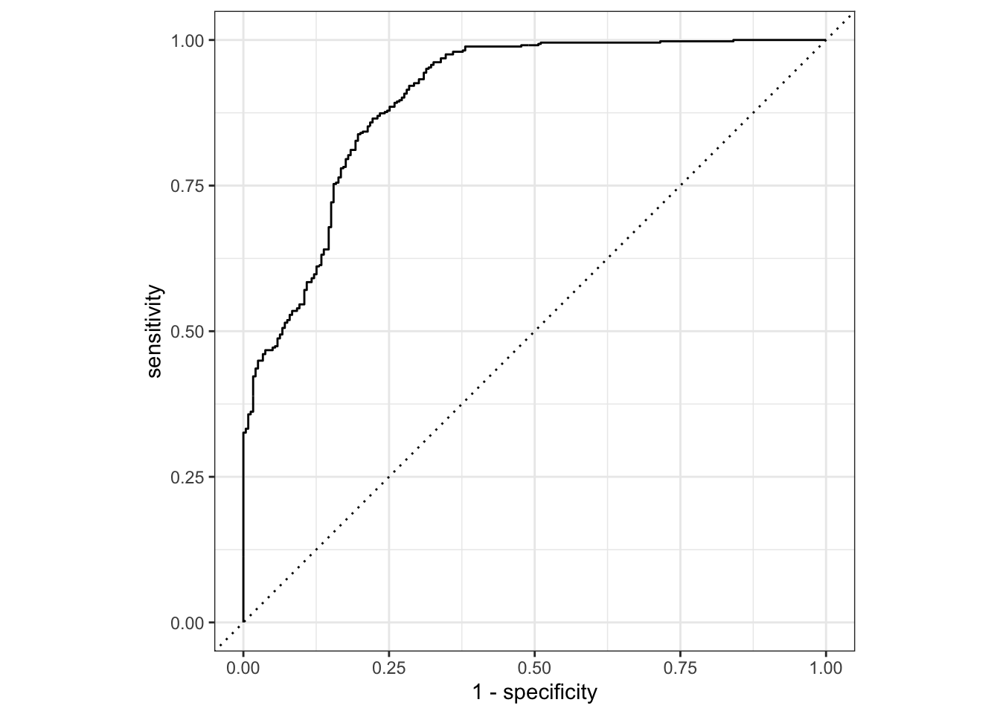

train <- read.csv("train.csv")
test <- read.csv("test.csv")
train <- train %>%
select(-X,-weekday) %>%
mutate_if(is.character,as.factor)
test <- test %>%
select(-X,-weekday) %>%
mutate_if(is.character,as.factor)4 Modeling
4.1 Data Loading
rec <- train %>%
recipe(occupancy ~.) %>%
step_normalize(all_numeric_predictors()) %>%
step_dummy(all_factor_predictors())4.2 Baseline Modeling
4.2.1 Logistic Regression
lr_mod <-
logistic_reg() %>%
set_engine('glm')
aqara_workflow <-
workflow() %>%
add_model(lr_mod) %>%
add_recipe(rec)
aqara_workflow══ Workflow ════════════════════════════════════════════════════════════════════
Preprocessor: Recipe
Model: logistic_reg()
── Preprocessor ────────────────────────────────────────────────────────────────
2 Recipe Steps
• step_normalize()
• step_dummy()
── Model ───────────────────────────────────────────────────────────────────────
Logistic Regression Model Specification (classification)
Computational engine: glm lr_gridsearch <- aqara_workflow %>%
fit(data = train)lr_gridsearch %>%
pull_workflow_fit() %>%
tidy()# A tibble: 9 × 5
term estimate std.error statistic p.value
<chr> <dbl> <dbl> <dbl> <dbl>
1 (Intercept) -1.17 0.102 -11.5 1.86e-30
2 X.1 -0.736 0.102 -7.24 4.60e-13
3 co2 -0.667 0.0822 -8.10 5.29e-16
4 temperature -0.332 0.0867 -3.83 1.28e- 4
5 humidity 0.364 0.0874 4.17 3.07e- 5
6 door -4.11 0.481 -8.54 1.33e-17
7 motion 4.40 0.456 9.63 5.78e-22
8 hour -0.159 0.0656 -2.42 1.53e- 2
9 fp2_non_detection 4.97 0.274 18.2 1.04e-73pred <- predict(lr_gridsearch,test)
pred <- pred$.pred_class
confusionMatrix(pred,test$occupancy)Confusion Matrix and Statistics
Reference
Prediction detection non_detection
detection 443 129
non_detection 2 110
Accuracy : 0.8085
95% CI : (0.777, 0.8373)
No Information Rate : 0.6506
P-Value [Acc > NIR] : < 2.2e-16
Kappa : 0.5197
Mcnemar's Test P-Value : < 2.2e-16
Sensitivity : 0.9955
Specificity : 0.4603
Pos Pred Value : 0.7745
Neg Pred Value : 0.9821
Prevalence : 0.6506
Detection Rate : 0.6477
Detection Prevalence : 0.8363
Balanced Accuracy : 0.7279
'Positive' Class : detection
pred_prob <- predict(lr_gridsearch,test,type='prob') %>%
bind_cols(test %>% select(occupancy))
pred_prob # A tibble: 684 × 3
.pred_detection .pred_non_detection occupancy
<dbl> <dbl> <fct>
1 0.927 0.0727 detection
2 0.924 0.0764 detection
3 0.919 0.0810 detection
4 0.915 0.0847 detection
5 0.912 0.0884 detection
6 0.955 0.0452 detection
7 0.954 0.0464 detection
8 0.952 0.0483 detection
9 0.950 0.0497 detection
10 0.948 0.0517 detection
# ℹ 674 more rowspred_prob %>%
roc_curve(truth=occupancy,.pred_detection) %>%
autoplot()
pred_prob %>%
roc_auc(truth = occupancy, .pred_detection)# A tibble: 1 × 3
.metric .estimator .estimate
<chr> <chr> <dbl>
1 roc_auc binary 0.8994.2.2 Random Forest
control <- trainControl(method='cv',
number=5,
classProbs=T,
summaryFunction = twoClassSummary,
savePredictions="all")
tunegrid <- expand.grid(mtry = c(1:5))
rf_gridsearch <- train(rec,train,
method='rf',
trControl = control,
tuneGrid = tunegrid,
metric ="ROC")pred <- predict(rf_gridsearch,newdata=test)
confusionMatrix(pred,test$occupancy)Confusion Matrix and Statistics
Reference
Prediction detection non_detection
detection 435 90
non_detection 10 149
Accuracy : 0.8538
95% CI : (0.8251, 0.8794)
No Information Rate : 0.6506
P-Value [Acc > NIR] : < 2.2e-16
Kappa : 0.6514
Mcnemar's Test P-Value : 2.789e-15
Sensitivity : 0.9775
Specificity : 0.6234
Pos Pred Value : 0.8286
Neg Pred Value : 0.9371
Prevalence : 0.6506
Detection Rate : 0.6360
Detection Prevalence : 0.7675
Balanced Accuracy : 0.8005
'Positive' Class : detection
4.2.3 Xgboost
control <- trainControl(method='cv',
number=5,
classProbs=T,
summaryFunction = twoClassSummary,
savePredictions="all")
xgb_gridsearch <- train(rec,train,
method='xgbTree',
trControl = control,
tuneLength = 3,
metric ="ROC",
verbosity = 0)pred_xgb <- predict(xgb_gridsearch,newdata=test)
confusionMatrix(pred_xgb,test$occupancy)Confusion Matrix and Statistics
Reference
Prediction detection non_detection
detection 443 201
non_detection 2 38
Accuracy : 0.7032
95% CI : (0.6674, 0.7372)
No Information Rate : 0.6506
P-Value [Acc > NIR] : 0.001994
Kappa : 0.1914
Mcnemar's Test P-Value : < 2.2e-16
Sensitivity : 0.9955
Specificity : 0.1590
Pos Pred Value : 0.6879
Neg Pred Value : 0.9500
Prevalence : 0.6506
Detection Rate : 0.6477
Detection Prevalence : 0.9415
Balanced Accuracy : 0.5773
'Positive' Class : detection
4.2.4 Support Vector Machine
svm_gridsearch <- train(rec,train,
method = "svmPoly",
trControl = control,
tuneLength = 2,
metric="ROC")pred_svm <- predict(svm_gridsearch,newdata=test)
confusionMatrix(pred_svm,test$occupancy)Confusion Matrix and Statistics
Reference
Prediction detection non_detection
detection 442 182
non_detection 3 57
Accuracy : 0.7295
95% CI : (0.6946, 0.7625)
No Information Rate : 0.6506
P-Value [Acc > NIR] : 6.095e-06
Kappa : 0.2804
Mcnemar's Test P-Value : < 2.2e-16
Sensitivity : 0.9933
Specificity : 0.2385
Pos Pred Value : 0.7083
Neg Pred Value : 0.9500
Prevalence : 0.6506
Detection Rate : 0.6462
Detection Prevalence : 0.9123
Balanced Accuracy : 0.6159
'Positive' Class : detection
4.2.5 Ridge Regression
lambda <- seq(0,1,length=11)
ridge_grid <- expand.grid(alpha=0,lambda=lambda)
ridge_gridsearch <- train(rec,train,
method="glmnet",
trControl = control,
tuneGrid = ridge_grid,
metric = "ROC")pred_ridge <- predict(ridge_gridsearch,newdata=test)
confusionMatrix(pred_ridge,test$occupancy)Confusion Matrix and Statistics
Reference
Prediction detection non_detection
detection 441 154
non_detection 4 85
Accuracy : 0.769
95% CI : (0.7356, 0.8001)
No Information Rate : 0.6506
P-Value [Acc > NIR] : 1.276e-11
Kappa : 0.4056
Mcnemar's Test P-Value : < 2.2e-16
Sensitivity : 0.9910
Specificity : 0.3556
Pos Pred Value : 0.7412
Neg Pred Value : 0.9551
Prevalence : 0.6506
Detection Rate : 0.6447
Detection Prevalence : 0.8699
Balanced Accuracy : 0.6733
'Positive' Class : detection
4.2.6 Model Selection Based on Cross-Validation
resamps <- resamples(list(
random_forest = rf_gridsearch,
xgb = xgb_gridsearch,
svm = svm_gridsearch,
ridge = ridge_gridsearch
))
summary(resamps)
Call:
summary.resamples(object = resamps)
Models: random_forest, xgb, svm, ridge
Number of resamples: 5
ROC
Min. 1st Qu. Median Mean 3rd Qu. Max. NA's
random_forest 0.9851090 0.9876422 0.9901914 0.9897048 0.9906865 0.9948950 0
xgb 0.9798876 0.9850157 0.9870199 0.9872293 0.9919979 0.9922253 0
svm 0.9194433 0.9435033 0.9499547 0.9436320 0.9521879 0.9530711 0
ridge 0.9296646 0.9301753 0.9319417 0.9353642 0.9352067 0.9498327 0
Sens
Min. 1st Qu. Median Mean 3rd Qu. Max. NA's
random_forest 0.9609929 0.9680851 0.9751773 0.9723404 0.9751773 0.9822695 0
xgb 0.9361702 0.9468085 0.9680851 0.9609929 0.9716312 0.9822695 0
svm 0.9751773 0.9787234 0.9787234 0.9815603 0.9858156 0.9893617 0
ridge 0.9361702 0.9432624 0.9503546 0.9517730 0.9645390 0.9645390 0
Spec
Min. 1st Qu. Median Mean 3rd Qu. Max. NA's
random_forest 0.9172932 0.9396226 0.9433962 0.9442134 0.9509434 0.9698113 0
xgb 0.9283019 0.9473684 0.9547170 0.9540020 0.9698113 0.9698113 0
svm 0.6867925 0.7245283 0.7283019 0.7284835 0.7433962 0.7593985 0
ridge 0.7773585 0.7924528 0.7962264 0.7978806 0.8082707 0.8150943 0bwplot(resamps,metric="ROC")Argument: ROC를 기반으로 판단해 보면, randomForest와 XGB가 가장 우수하나, randomForest가 상대적으로 분산이 작고, 성능도 약간 우수한 편이므로 randomForest를 최종 모델로 선택한 것이 바람직 하다.